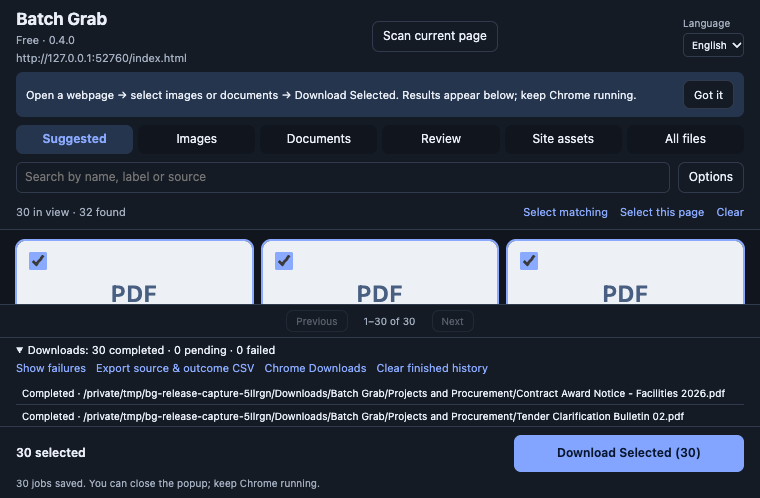

Find the documents
Scan the page you opened. Use Documents to focus the list, with all files and advanced filters still available.
Chrome extension · Document Handoff · beta 0.3.1
Collect accessible web documents, review their names, and keep a record of what actually downloaded.
For researchers, consultants and assistants preparing a document pack. Desktop Chrome · Developer-mode installation

The job is the handoff
Useful when a page has a list of reports or attachments, but the links and source filenames leave you with cleanup work.
Scan the page you opened. Use Documents to focus the list, with all files and advanced filters still available.
Review suggestions from link text, relevant nearby labels and section headings. Edit anything that needs a better name.
Inspect actual completed and failed downloads. Export sources and saved paths to a CSV for your own handoff record.
Context, without an AI service
Batch Grab uses page labels and rules. It does not read inside PDFs or guess a document’s author, date or meaning.
Generic or ambiguous labels still need review. A familiar free downloader may already solve your task—we want to test that fairly.
Walk through the real beta →Fictional fixture · before → reviewed output
Suggestions depend on the page’s labels. These are demo documents, not customer results.
Keep the source with the file
The source index connects the original page and URL with actual saved paths and reported failures. It stays on your computer until you choose to share it.

Start with the right task
Best evaluated on a page exposing direct PDF, CSV or XLSX links, with descriptive labels nearby.
Beta access and installation →